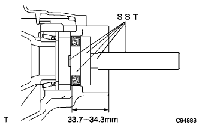

トランスファ ケース オイルシール RH（4WD） 取り付け |
| 1. トランスファ ケース オイルシール RH取り付け |
SSTおよびハンマーを使用して、新品のオイルシールを図の位置までケースに打ち込む。
|  |
オイルシールのリップ部に少量のMPグリースNo.2を塗布する。
| 2. フロントドライブ シャフトASSY RH取り付け |
インボードジョイントASSY RHのスプライン部にオートフルードタイプT-IVを塗布する。
シャフトのスプラインを合わせ、ドライブシャフトASSY RHを確実に挿入する。
 |
角軸マイナスドライバーを使用して、ドライブシャフトベアリングブラケットホールスナップリングをベアリングブラケットに取り付け、新品のベアリングブラケットボルトNo.1を取り付ける。
| 3. フロントアクスルASSY RH取り付け |
| 4. タイロッドエンドRH取り付け |
| 5. スピード センサ FR RH取り付け |
| 6. フロントディスクブレーキキャリパASSY RH取り付け |
| 7. フロントアクスル シャフト ナット RH取り付け |
| 8. フロントタイヤ取り付け |
| 9. バッテリーマイナスターミナル取り付け |
| 10. オートマチックトランスアクスルフルード補充 |
| 11. オートマチックトランスアクスルフルード点検 |
| 12. トランスファオイル補充 |
| 13. トランスファオイル点検 |
| 14. トランスファオイル調整 |
| 15. フロントホイールアライメント点検·調整 |
参照)| 16. テストモード点検(スピードセンサ系統) |
参照)| 17. エンジンアンダ カバー RH取り付け |
スクリュー2個およびボルト2本で、エンジンアンダカバーRHを取り付ける。
ナットを、締め付ける。